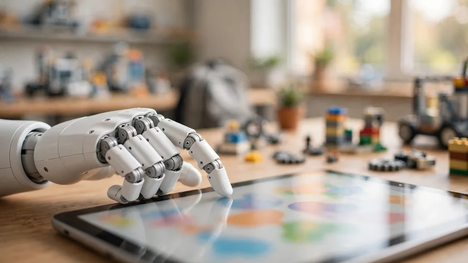

FF Nova: Faraday Future sets October 14 for its first humanoid robot — invite-only reveal, plus a Mini and a developer RL platform
Faraday Future and FF EAI Robotics will host a joint October 14 launch event headlined by FF Nova, the company's first embodied-AI humanoid robot. Alongside it: a smaller FF Nova Mini for classrooms, an education ecosystem brain, and a developer reinforcement-learning platform.
Faraday Future Intelligent Electric Inc. (NASDAQ: FFAI) announced on Sunday that it and FF EAI Robotics Ecosystem Inc. (NASDAQ: FFR) will co-host a new-product launch event on October 14, 2026 — four launches built around embodied-AI robotics, "Physical AI" education, and developer enablement.
The lineup: FF Nova, the company's first embodied-AI humanoid robot, built for developers and educational institutions and debuting through an invitation-only launch; FF Nova Mini, a smaller humanoid aimed at foundational Physical AI education; the EAI Education Ecosystem Brain with Curriculum Skills 2.0; and the FF Nova Developer Reinforcement Learning Platform, opening exclusive early access to the developer community. The full video goes live at ff.com on October 15 at 5:00 p.m. PDT.
The hardware: Nova and Nova Mini
FF Nova is the headline, and the framing is deliberate. Rather than pitching a consumer robot, FF is aiming Nova at the two audiences most likely to buy humanoids first: developers who will build on them, and schools and research institutions that will teach with them. The company describes its robotics strategy as two-pronged — humanoid and bionic robots on one side, automotive-focused robots on the other — and Nova is the first flagship of the humanoid prong to get its own launch event.
Nova Mini extends the same logic downward: a smaller machine for foundational education — the kind of robot a school district can actually put in a classroom. FF says its "Physical AI Spark Program" and related products will also be unveiled at the event, with the stated goal of replicating its robotics education ecosystem across the United States. The company claims to be the first U.S. company to deliver both humanoid and bionic robots, and its latest weekly report puts September device sales at 265 units — a monthly record — with 817 units shipped since the end of February.

The software: an education brain and a developer RL platform
Hardware is only half the announcement. The EAI Education Ecosystem Brain with Curriculum Skills 2.0 is FF's pitch for the classroom software layer — the "brain" that powers the robots and the curriculum that teaches students to work with them. More interesting for the industry is the FF Nova Developer Reinforcement Learning Platform: a dedicated RL stack for training and refining robot behaviors, opening to developers in exclusive early access.
That platform is where FF's "evolutionary flywheel" rhetoric meets something concrete. The company's stated model is scaled device delivery feeding data collection and training, feeding a continuously evolving EAI Brain — and an RL platform for outside developers would turn every Nova deployment into a potential training source. FF says it has already signed more than 100 developers and developer partners, with cooperation intentions from several developer-infrastructure providers. Its robots drew university buying interest at IROS 2026 in Pittsburgh in late September, per the company.
The corporate chessboard
The joint billing — FFR and FFAI — matters. FF EAI Robotics Ecosystem Inc. has proposed to acquire FFAI's EAI Robotics business, and FFR says the two signed a non-binding term sheet on October 1 at an estimated valuation of about $200 million, with the goal of an independent public listing for the robotics business. Wednesday's event is the first joint product moment of that courtship — and FF says the transaction, if completed, would let FFR finance the robotics business independently and ease FFAI's own funding needs.
October 14 is doing triple duty: the same day also hosts founder YT Jia's rescheduled Investor Weekly Report and an AIAA LA Seminar co-hosted with AIAA at FFAI headquarters, with more than 50 scholars and professors from leading universities and the AI field invited. FF is stacking the calendar to make one day carry the product story, the investor story, and the academic-credibility story at once.
What to watch
Invite-only means no independent hands-on yet: no specs, no pricing, no ship dates were disclosed in Sunday's announcement, and the reveal itself happens behind closed doors before the public video lands Thursday evening. Treat the event as the opening of FF's embodied-AI sales pitch, not its conclusion.
The timing is not accidental. 2026 has been a record year for robotics funding — nearly $48 billion has flowed into the sector year-to-date, much of it chasing humanoids and the data to train them. FF's bet is that the scarce resource isn't the robot — it's the developer ecosystem and the real-world training data around it. An RL platform plus an education pipeline is a plausible way to manufacture both. Whether a company still flagging going-concern doubts in its own filings can execute it is the open question Wednesday has to start answering.
The announcements also arrive wrapped in unusually candid risk language. FFAI's release flags "substantial doubt" about the company's ability to continue as a going concern, its dependence on outside funding, reliance on a single and Chinese OEMs for robotics products, and tariff exposure. FFR's own release adds that the acquisition term sheet is non-binding and may never become a deal. None of that invalidates the robots — FF says the EAI robotics business has already made commercial deliveries of humanoid and biomimetic products — but it frames what Wednesday has to prove: that Nova is a shippable developer platform, not a stage demo propping up a financing story.